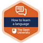

Introduction and guidance¶
This free course, How to learn a language, is for anyone thinking of learning a language. Whether it is the first time you are venturing into language learning, or if you have already started, this course will show you how to keep motivated, set your own goals, and develop strategies to learn a language. You will understand what is needed to succeed, and get lots of advice on how to develop the four skills of speaking, listening, reading and writing. You will also find out how to learn vocabulary, and how to evaluate language learning resources. Finally, you will also learn how to create a ‘virtual language immersion’ for yourself.
The course lasts 8 weeks, with approximately 3 hours of study time each week. You can work through the course at your own pace, so if you have more time one week there is no problem with pushing on to complete another week’s study. You can also take as long as you want to complete it.
After completing this course, you will be able to:
understand your motivation for learning languages
set realistic goals in language learning
memorise vocabulary
evaluate independent language learning resources for personal learning goals
create a virtual immersion environment.
Moving around the course¶
In the ‘Summary’ at the end of each week, you can find a link to the next week. If at any time you want to return to the start of the course, click on ‘Full course description’. From here you can navigate to any part of the course. Alternatively, use the week links at the top of every page of the course.
It’s also good practice, if you access a link from within a course page (including links to the quizzes), to open it in a new window or tab. That way you can easily return to where you’ve come from without having to use the back button on your browser.
Who wrote this course?¶
This course has been written by three authors, who are all language teachers and learners.
Tita Beaven
Tita Beaven is a Senior Lecturer in Spanish at The Open University. Her research is in the area of innovative pedagogy and open education. Tita speaks Spanish, English, French and Italian. She is also currently learning German, and she has also already decided what three languages she’s going to learn next! You can find out more about her teaching and research on Tita’s OU Profile.
Olly Richards
Olly Richards is a polyglot who speaks eight languages (English, French, German, Spanish, Portuguese, Japanese, Arabic and Cantonese) and is the founder of I Will Teach You A Language, a website that provides study hacks and mindtools for language learners.

Fernando Rosell-Aguilar
Fernando Rosell-Aguilar is a Senior Lecturer in Spanish at The Open University, and his research is in the area of online language teaching and learning. Fernando speaks Spanish and English, and some French and Italian. You can find out more by visiting Fernando’s OU Profile.
Each author has written specific weeks of this course, and share with you their insights into how to learn a language as both expert teachers and learners of languages.
There are also videos from learners speaking about their language learning journey, and some comments from Laura, an OU languages graduate, who will also offer her reflections and advice.
What is a badged course?¶
While studying How to learn a language you have the option to work towards gaining a digital badge.
Badged courses are a key part of The Open University’s mission to promote the educational well-being of the community. The courses also provide another way of helping you to progress from informal to formal learning.
To complete a course you need to be able to find about 24 hours of study time, over a period of about 8 weeks. However, it is possible to study them at any time, and at a pace to suit you.
Badged courses are all available on The Open University’s OpenLearn website and do not cost anything to study. They differ from Open University courses because you do not receive support from a tutor. But you do get useful feedback from the interactive quizzes.
What is a badge?¶
Digital badges are a new way of demonstrating online that you have gained a skill. Schools, colleges and universities are working with employers and other organisations to develop open badges that help learners gain recognition for their skills, and support employers to identify the right candidate for a job.
Badges demonstrate your work and achievement on the course. You can share your achievement with friends, family and employers, and on social media. Badges are a great motivation, helping you to reach the end of the course. Gaining a badge often boosts confidence in the skills and abilities that underpin successful study. So, completing this course should encourage you to think about taking other courses.

How to get a badge¶
Getting a badge is straightforward! Here’s what you have to do:
read each week of the course
score 50% or more in the two badge quizzes in Week 4 and Week 8.
For all the quizzes, you can have three attempts at most of the questions (for true or false type questions you usually only get one attempt). If you get the answer right first time you will get more marks than for a correct answer the second or third time. If one of your answers is incorrect you will often receive helpful feedback and suggestions about how to work out the correct answer.
For the badge quizzes, if you’re not successful in getting 50% the first time, after 24 hours you can attempt the whole quiz, and come back as many times as you like.
We hope that as many people as possible will gain an Open University badge – so you should see getting a badge as an opportunity to reflect on what you have learned rather than as a test.
If you need more guidance on getting a badge and what you can do with it, take a look at the OpenLearn FAQs. When you gain your badge you will receive an email to notify you and you will be able to view and manage all your badges in My OpenLearn within 24 hours of completing the criteria to gain a badge.
Get started with Week 1.